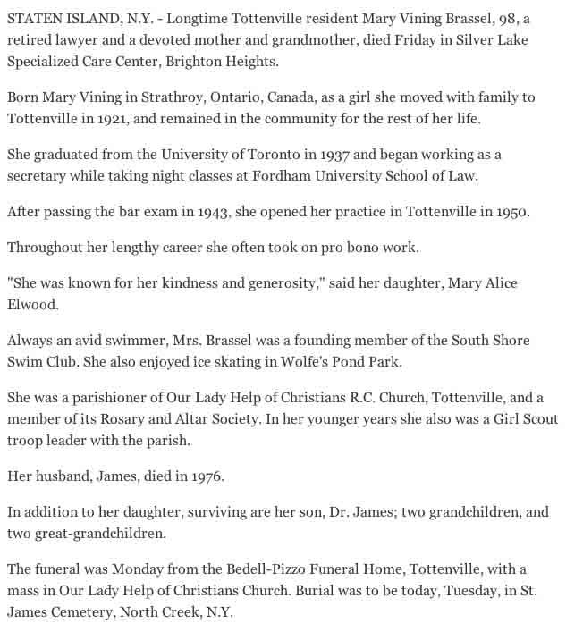

Census Data
| 1920 | 1930 | 1940 | |
| Frank W. Vining | 37 | dead | |
| Alice Katherine (Healy) Vining | 38 | ? | ? |
| Joseph Alexander Vining | 6 | ? | ? |
| Mary Vining | 4 | ? | ? |
| John Francis Vining | 2 | ? | ? |

Death Data
Obituary for Mary (Vining) Brassel, daughter of Frank W. Vining and Alice Katherine (Healy) Vining: